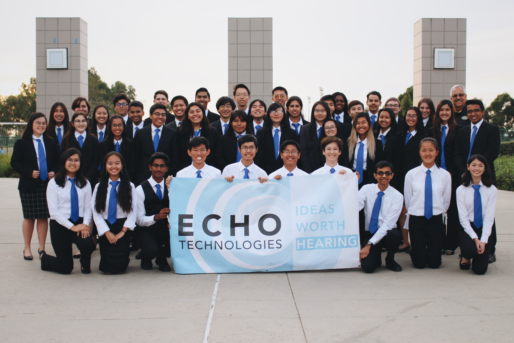

<!DOCTYPE html><html><head><title>Echo Techologies</title><meta name="viewport" content="width=device-width, initial-scale=1"><link href="bundle.css" rel="stylesheet"></head></html><body><header><ul id="nav"><a href="/"><div id="logo-text"><span class="title">ECHO</span><span id="blurb">Technologies</span></div></a><div id="links"><li><a href="/about.html"><h6>About</h6></a></li><li><a href="/donate.html"><h6>Donate</h6></a></li><li><a href="/outreach.html"><h6>Outreach</h6></a></li><li><a href="/interns.html"><h6>Interns</h6></a></li></div><i class="mdi mdi-menu" id="sidenav-trigger"></i></ul><ul id="sidenav"><i class="mdi mdi-close" id="close"></i><div id="links"><li><a href="/"><h6>Home</h6></a></li><li><a href="/about.html"><h6>About</h6></a></li><li><a href="/donate.html"><h6>Donate</h6></a></li><li><a href="/outreach.html"><h6>Outreach</h6></a></li><li><a href="/interns.html"><h6>Interns</h6></a></li></div></ul><div id="backdrop"></div><div id="loader"><div></div><div></div></div></header><main><div class="section" id="about"><div class="center"><h2 class="title">About Us</h2><p>Echo Technologies is a student-run organization led by seniors in the Engineering Design and Development (EDD) course at the California Academy of Mathematics and Science (CAMS), an engineering research course in which students will work in teams of 30-40 to research, design, construct and test a solution to an open-ended engineering problem. The product development life cycle and design process are used to guide and help the team to reach a solution to the problem. The team presents and defends their solution to a panel of outside reviewers at the conclusion of the course. The EDD course allows students to apply all the skills and knowledge learned in previous Project Lead the Way (PLTW) courses. The use of 3D design software helps students design solutions to the problem their team has chosen. This course also engages students in time management and teamwork skills, a valuable set for students in the future.</p></div></div></main><footer class="section"><div id="logo-text"><h4 class="title">ECHO</h4><h4 id="blurb">Technologies</h4></div><div class="column"><h5>Contact</h5><div class="mdi-set"><a href='ma&#105;lto&#58;&#101;cho%&#55;4e&#99;%6&#56;&#37;6E%&#54;F%&#54;&#67;ogy201%39&#64;g&#37;6D&#97;&#105;&#37;6C&#46;com'><i class="mdi mdi-email"></i></a></div></div><div class="column"><h5>Follow Us</h5><div class="mdi-set" id="icons"><a href="https://www.instagram.com/echo.technologies/" target="_blank"><i class="mdi mdi-instagram"></i></a><a href="https://www.linkedin.com/in/echo-technology-66011616b/" target="_blank"><i class="mdi mdi-linkedin"></i></a><!--<i class="mdi mdi-facebook-box"></i>
<i class="mdi mdi-youtube"></i>--></div></div></footer><script src="https://code.jquery.com/jquery-2.2.4.min.js" integrity="sha256-BbhdlvQf/xTY9gja0Dq3HiwQF8LaCRTXxZKRutelT44=" crossorigin="anonymous"></script><script src="https://cdn.jsdelivr.net/npm/legit-ripple@1.1.0/dist/ripple.min.js" integrity="sha256-kpZ0Yzm1lhJVqvZj/SzmB8y/rTjGiPac2ufSxqIBfUk=" crossorigin="anonymous"></script><script type="text/javascript" src="bundle.js"></script></body>